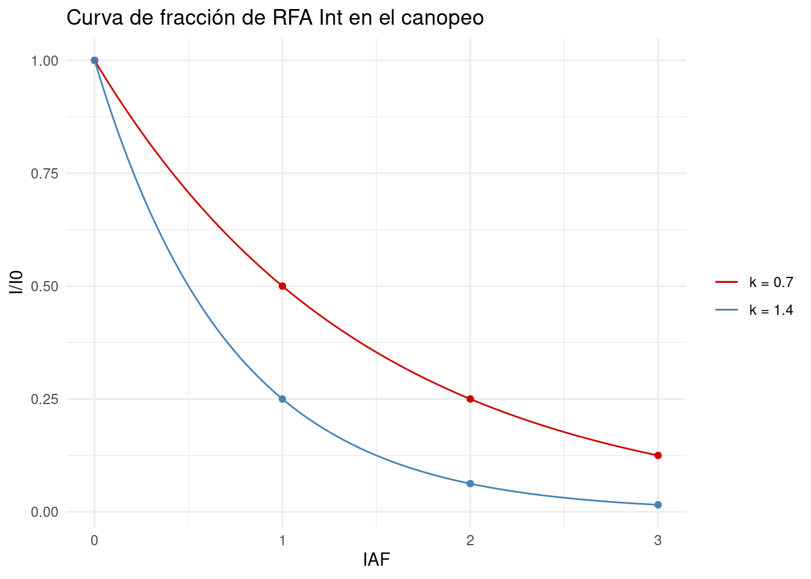
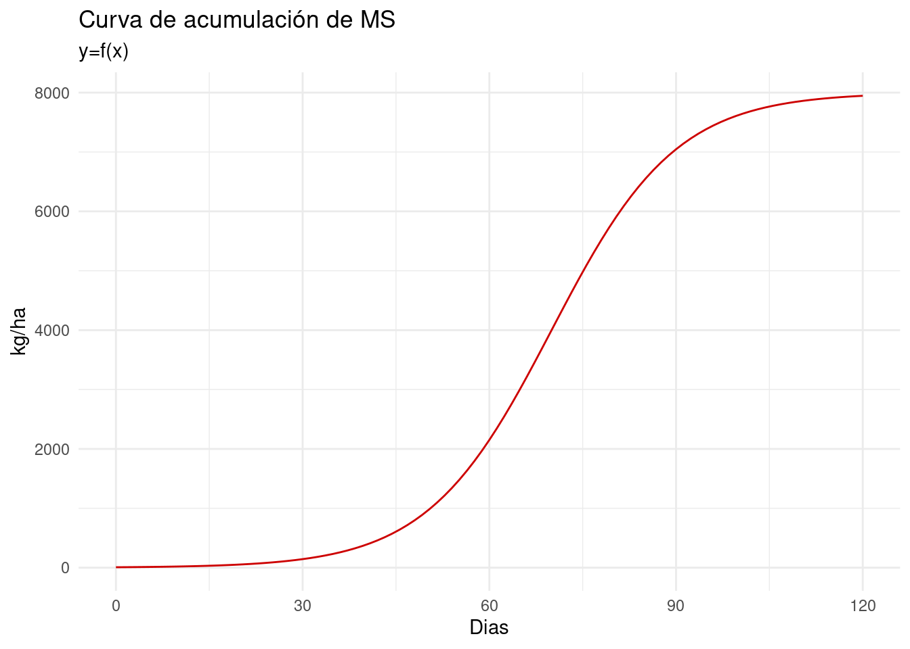
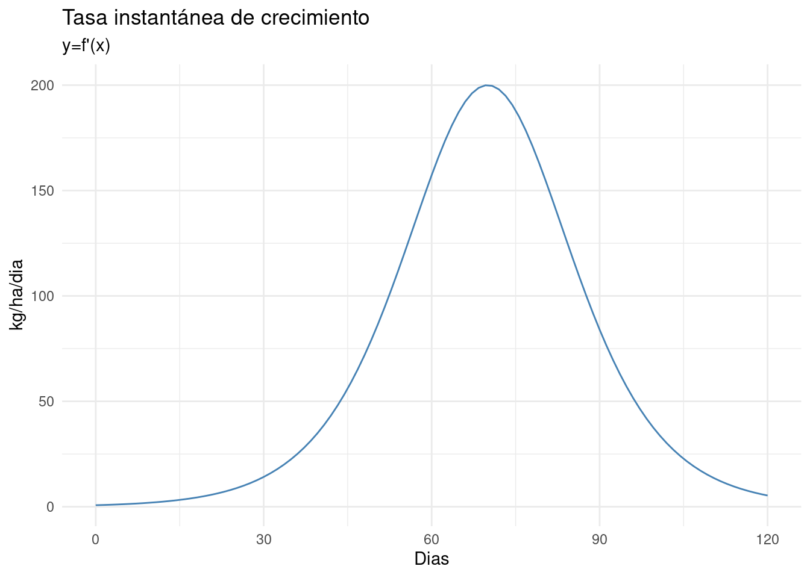
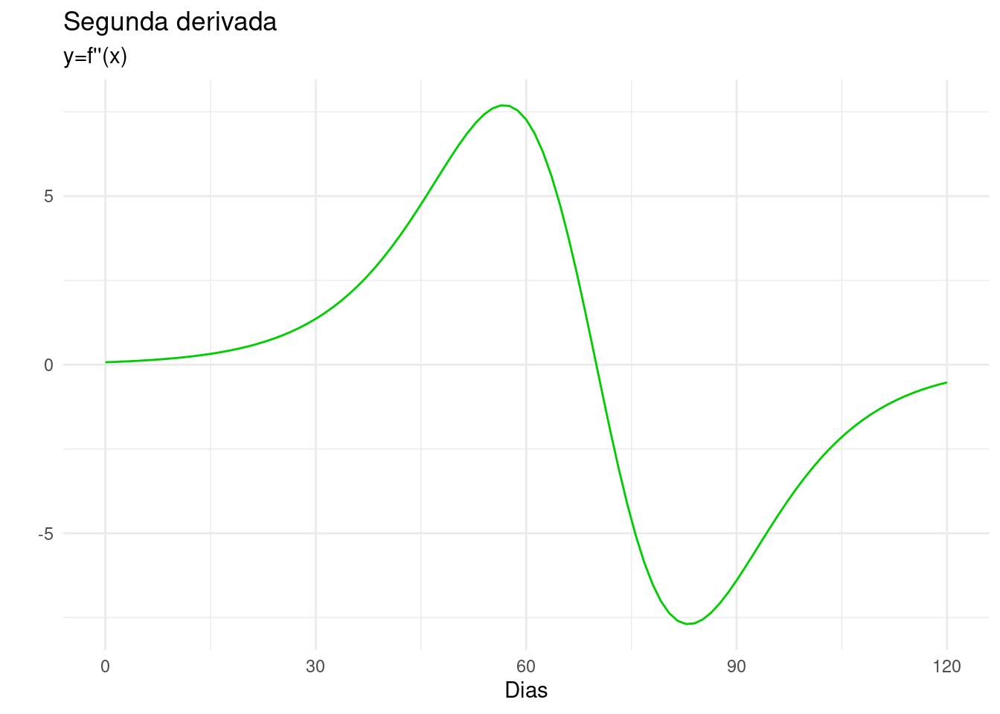
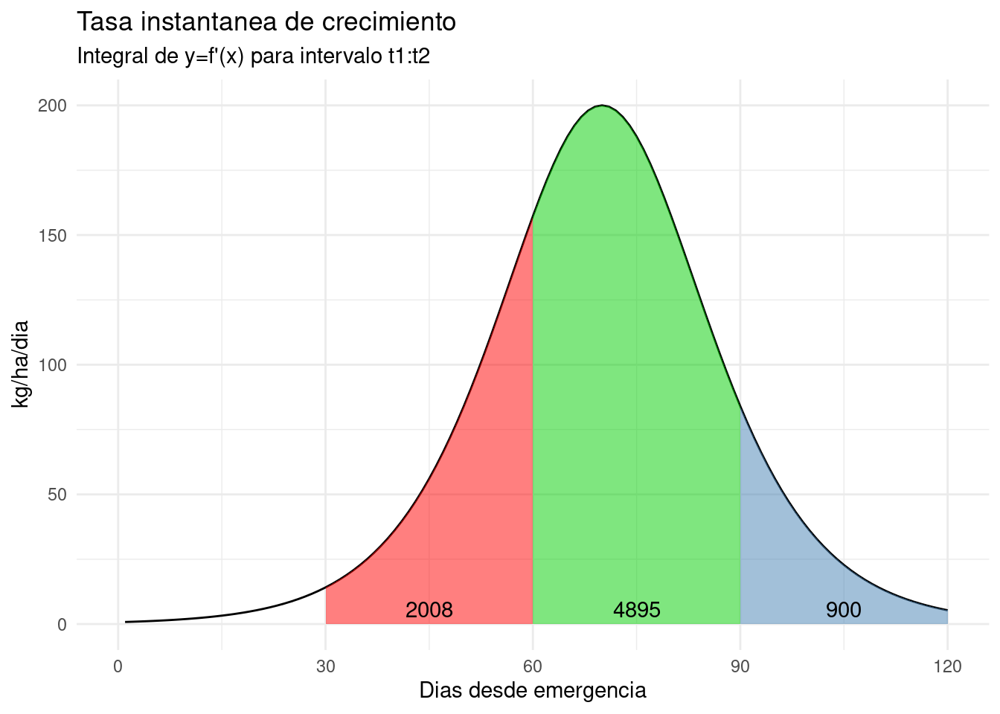

| L | A | B |
|---|---|---|
| 1 | 2000 | 2000 |
| 2 | 1000 | 500 |
| 3 | 500 | 125 |
| 4 | 250 | 31 |
Donde:
L: índice de área foliar acumulado (\(m^{2} m^{-2}\)). Es decir, en L=1 la radiación atravesó 1m² de hojas/m² de suelo, y así sucesivamente. L sería un “Delta AF”, o sea si usamos la planta entera L=4, 4 m² de AF fueron atravesados (3.
I: radiación (μmol \(m^{-2} seg^{-1}\)) incidente sobre el tope de cada estrato foliar (L)
La fracción de RFA inerceptada (\(fRFA\)) y el índice de área foliar (\(IAF\)) fueron relacionados según Monsi y Saeki (1953) en una función no lineal dada por:
\(fRFA = e^{-k * l}\)
reemplazando:
\(\frac{I}{I_0} = e^{-k * l}\)
linearizando por medio de aplicación de logaritmo natural (log en R) a ambos lados de la ecuación, obtenemos:
\(ln\frac{I}{I_0} = ln(e^{-k * l})\)
y su equivalencia:
\(ln\frac{I}{I_0} = -k * l\)
resolviendo finalmente:
\(k = \frac{-ln(I/I_0)}{L-L_0}\)
Para el caso \(A\) tomamos los valores de \(L=1, 2\) y sus respectivos valores de \(I = 2000, 1000\).
(Obviamente se puede tomar cualquier valor de la tabla. Verificar que el resultado siempre es el mismo)
\(ln\frac{1000}{2000} = -k * l\)
Ej de cálculo para A:
k_A1 = -log(1000/2000)
k_A1## [1] 0.6931472k_A2 = -log(250/2000)/(4-1)
k_A2## [1] 0.6931472Ej de cálculo para B:
k_B1 = -log(125/2000)/(3-1)
k_B1## [1] 1.386294Ahora que hemos estimado k podremos visualizar ambos canopeos por reemplazo de la ecuación
fraccion_interceptada_A <- function(x) exp(- k_A1*x)
fraccion_interceptada_B <- function(x) exp(- k_B1*x)
ggplot(data.frame(x = c(0, 5)), aes(x)) +
stat_function(fun = fraccion_interceptada_A, aes(colour = paste0("k = ", round(k_A1,1))))+
stat_function(fun = fraccion_interceptada_B, aes(colour = paste0("k = ", round(k_B1,1))))+
labs(x="IAF", y = "I/I0",
title = "Curva de fracción de RFA Int en el canopeo",
col = "") 
Ejemplo de k bajos es el maíz (canopias erectófilas dejan pasar más luz. k= 0.3 aprox), mientras que canopias planófilas, como el girasol, presentan coeficientes más altos (ej. k= 1,5).
A continuación visualizaremos la curva de acumulación de materia seca de un cultivo: (nótese que esto deberia realizarse por medio de la evaluación empírica de muchos puntos en el tiempo de medición de MS, y luego la estimación de los parámetros. Para fines didácticos, presentamos una función ya con sus parámetros estimados)
f(x) = asintota / (1 + exp((punto_medio - x) * escala))
\(asintota = 8000\)
\(punto\_medio = 70\)
\(escala = 0.1\)
# para visualizar las funciones en ggplot usaremos la siguiente funcion `function()`:
f1 <- function(x) 8000 / (1 + exp((70 - x) * 0.1))
p1 <- ggplot(data.frame(x = c(0, 120)), aes(x)) +
stat_function(fun = f1, col = "red3")+
labs(x="Dias desde emergencia", y = "kg/ha",
title = "Curva de acumulación de MS",
subtitle = "y=f(x)") +
scale_x_continuous(
name = "Dias",
limits = c(0, 120),
breaks = scales::extended_breaks(Q = c(30, 10)))
p1
Para responder a la actividad propuesta, de obtener las tasas de crecimiento instantáneas, derivaremos \(f1\):
# para hacer operaciones de cálculo en R usamos la función `expression`
f1_expre = expression(8000 / (1 + exp((70 - x) * 0.1)))
f1_expre## expression(8000/(1 + exp((70 - x) * 0.1)))f2_express <- D(f1_expre, "x") # derivada 1° de f1
# Para graficas pasamos de "express" a "function"
f1_deriv <- function(x) 8000 * (exp((70 - x) * 0.1) * 0.1)/(1 + exp((70 - x) * 0.1))^2
# optimize(f1_deriv, interval=c(30, 60), maximum=TRUE)
p2 <- ggplot(data.frame(x = c(0, 120)), aes(x)) +
stat_function(fun = f1_deriv, col= "steelblue") +
labs(x="Dias desde emergencia", y = "kg/ha/dia",
title= "Tasa instantánea de crecimiento",
subtitle = "y=f'(x)") +
scale_x_continuous(
name = "Dias",
limits = c(0, 120),
breaks = scales::extended_breaks(Q = c(30, 10)))#+
p2
f3_express <- D(D(f1_expre,'x'),'x')# derivada 2° de f1
f1_deriv2 <- function(x) -(8000 * (exp((70 - x) * 0.1) * 0.1 * 0.1)/(1 + exp((70 - x) *
0.1))^2 - 8000 * (exp((70 - x) * 0.1) * 0.1) * (2 * (exp((70 -
x) * 0.1) * 0.1 * (1 + exp((70 - x) * 0.1))))/((1 + exp((70 -
x) * 0.1))^2)^2)
p3 <- ggplot(data.frame(x = c(0, 120)), aes(x)) +
stat_function(fun = f1_deriv2, col= "green3") +
labs(x="Dias desde emergencia", y = "",
title= "Segunda derivada",
subtitle = "y=f''(x)") +
scale_x_continuous(
name = "Dias",
limits = c(0, 120),
breaks = scales::extended_breaks(Q = c(30, 10)))
p3
Respondiendo al inciso b) Cómo podríamos determinar la biomasa que se acumuló entre dos momentos del ciclo usando la función de tasa de acumulación instantánea.
df = data.frame(x = seq(1, 120, length.out = 120))
df$y = f1_deriv(df$x)
int_30_60 <- integrate(f1_deriv,30,60)
int_60_90 <- integrate(f1_deriv,60,90)
int_90_120 <- integrate(f1_deriv,90,120)
ggplot(df, aes(x, y)) +
geom_line()+
labs(x="Dias desde emergencia", y = "kg/ha/dia",
title = "Tasa instantanea de crecimiento",
subtitle = "Integral de y=f'(x) para intervalo t1:t2") +
scale_x_continuous(
limits = c(0, 120),
breaks = scales::extended_breaks(Q = c(30, 10)))+
geom_area(data = df[df$x >= 30 & df$x <= 60,], aes(x = x, y = y),
fill = "red", alpha = 0.5)+
annotate("text", x = 45, y = -Inf, vjust = -2,
label = round(int_30_60$value,0))+
geom_area(data = df[df$x >= 60 & df$x <= 90,], aes(x = x, y = y),
fill = "green3", alpha = 0.5)+
annotate("text", x = 75, y = -Inf, vjust = -2,
label = round(int_60_90$value,0))+
geom_area(data = df[df$x >= 90 & df$x <= 120,], aes(x = x, y = y),
fill = "steelblue", alpha = 0.5)+
annotate("text", x = 105, y = -Inf, vjust = -2,
label = round(int_90_120$value,0))
# ggsave(last_plot(), file = "figs/integral.png", w =5, h = 4)(Por hacer)
Andrade, Fernando H. 1995. “Analysis of Growth and Yield of Maize, Sunflower and Soybean Grown at Balcarce, Argentina.” Field Crops Research 41 (1): 1–12.
Monsi, M, and T Saeki. 1953. “The Light Factor in Plant Communities and Its Significance for Dry Matter Production.” Japanese Journal of Botany 14 (1): 22–52.